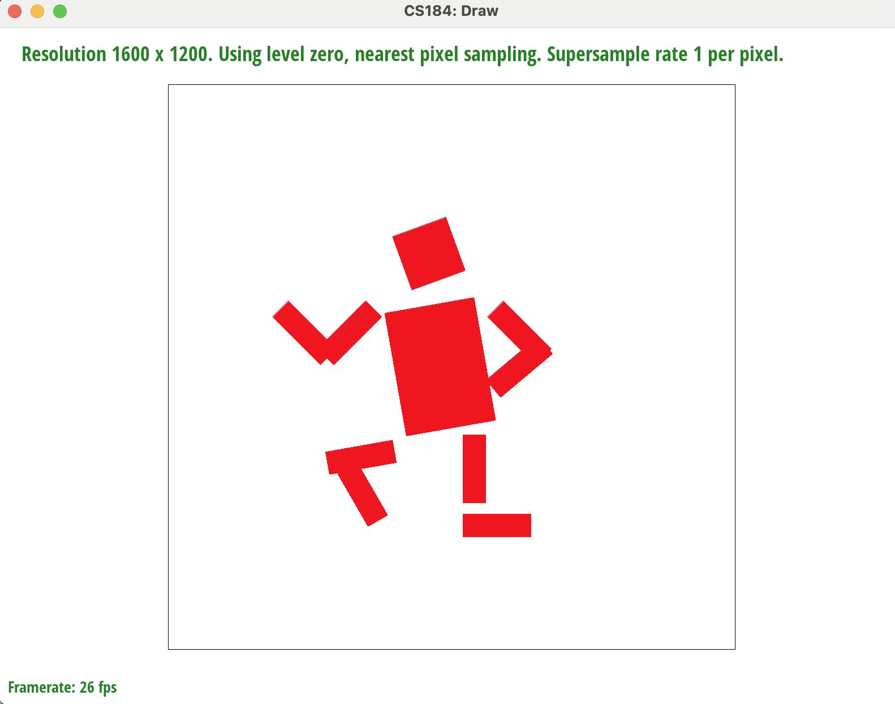

Overview
The assignment encompassed fundamental tasks such as drawing
single-color triangles using Barycentric Coordinates, optimizing
algorithms for efficiency, implementing supersampling for antialiasing,
and applying hierarchical transforms to create dynamic cubeman postures.
Additionally, we delved into advanced features like texture mapping with
both Nearest Neighbor Sampling and Bilinear Interpolation, and level
sampling with mipmaps for efficient rendering. The comparison of
performance metrics highlighted the trade-offs between pixel sampling
and level sampling, considering factors such as speed, memory usage, and
antialiasing quality.
Task 1: Drawing Single-Color Triangles (20 pts)
Solution Walk Though
In this task, we implemented a naive algorithm for pixel sampling within
triangle shapes. Initially, we utilized the provided helper function
rasterize_line
to draw the edges of the triangles. Subsequently, we determined the
position of the smallest bounding rectangle around the triangle. We then
iterated through every pixel within that rectangle, applying the
Barycentric Coordinate method to ascertain whether each pixel resides
inside the triangle and should be colored.
Optimization
One way that we did to optimize the algorithm is to detect when we are
out of the triangle for the second time.
To be specific, we used the fact that when we iterating through the
circumscribed rectangle of the triangle, we will be out of the triangle
for at most twice. See point A and B in the graph above.
Point A
represents the first time we are out of the triangle, and
Point B
represents the second time we are out of the triangle. As we can see, we
are not going to be in the triangle for another time.
Therefore, we can stop the iteration when we are out of the triangle for
the second time. This will make sure that we don't need to iterate
through the whole circumscribed rectangle of the triangle.
Usage
Barycentric Coordinates are commonly used in computer graphics,
particularly in rendering techniques such as triangle interpolation and
texture mapping.
Task 2: Antialiasing by Supersampling (20 pts)
Solution Walk Though
This is one of the key parts of the whole homework coding part. In this
section, we are supersampling every one pixel of our buffer. As we can
see in the description diagram provided on the website (shown as above),
supersampling provides us a more precise result by checking on which
smaller pixel is in the area and which ones are not. Therefore, we can
combine them back to one pixel with color averaged from the smaller
pixels. This will make sure that we have a more precise result and the
edges of the triangle will be smoother.
Algorithm
The way we implemented it is to divide the pixel into
sample_rate
subpixels and then sample the color of the subpixels in
void RasterizerImp::rasterize_triangle
. We also need to update our algorithm for calculating Barycentric
Coordinates at the same time since our coordinates for
x0, y0, x1, ...., y3
have changed according to our sample_rate. The rest are quite the same
as in the previous task. We just iterate the whole rectangle and send
the colors to the
sample_buffer
.
We then average the color of the subpixels and assign it to the pixel in
RasterizerImp::resolve_to_framebuffer. To average the color, we just
simply add up the colors for every single subpixel for one original
pixel (
sample_rate
subpixels in total) and then divide it by the
sample_rate.
We then assign the result to the pixel in the framebuffer.
However, we also need to alter our
void RasterizerImp::fill_pixel
function for this one since our lines and points does not need to be
supersampled. We can simply alter this function by assigning the same
color to all
sample_rate
subpixels.
Result

Sample Rate = 1

Sample Rate = 4
Task 3: Transforms (10 pts)

created a cubeman in running posture by doing the following operations.
-
rotate the head and torso by a certain angle to make it more natural.
-
adjusted the angle and position of the arms and legs to add dynamic to
the body.
Task 4: Barycentric Coordinate (10 pts)
Description about Barycentric Coordinates
Barycentric coordinates are a set of three values (usually denoted as
alpha, beta, and gamma) that represent the weights of the vertices of a
triangle in a coordinate system. These coordinates are used to express
any point within the triangle as a combination of its vertices.
Solution Walk Though
The function
void rasterize_interpolated_color_triangle
is responsible for rasterizing a triangle and interpolating colors
across it using barycentric coordinates. The barycentric coordinates are
calculated for each pixel within the bounding box of the triangle, and
the corresponding color is interpolated based on these coordinates. The
code iterates through each pixel in the bounding box, and for each
pixel, it performs subpixel sampling. For each subpixel, it calculates
the barycentric coordinates using the function
baryCalc and
checks whether the point is inside the triangle by verifying if the
barycentric coordinates are within certain bounds. If the point is
inside the triangle, the color is interpolated using the barycentric
coordinates, and the result is stored in the
sample_buffer.
This process is repeated for all subpixels within each pixel of the
bounding box, effectively filling the entire triangle with interpolated
colors.
Result
Task 5: "Pixel sampling" for texture mapping (15 pts)
Pixel sampling involves determining the color of a pixel in an image. In
texture mapping, I implemented it by mapping texture coordinates to
corresponding pixels and then sample on the mipmap of level 0. Following
are two ways to do pixel sampling:
-
Nearest Neighbor Sampling: When an image is resized or transformed,
each pixel in the new image is assigned the color value of the nearest
pixel in the original image. This method is quick and computationally
less intensive but can result in jagged edges and blocky artifacts,
especially when scaling up. The way we implemented it was to take the
float cordinates and round it to the nearest int cordinates.
-
Bilinear Interpolation: It considers the weighted average of the four
nearest pixels in the original image to determine the color of a pixel
in the new image. This results in smoother transitions and better
image quality during resizing or transformations. The way we
implemented this was to do interpolations between two reference points
and the current point. At first, we have four reference points
(vertices of the pixel the current point in in). We do interpolation
according to the graph below from the lecture.
Image Comparason between Nearest Neighbor Sampling Bilinear
Interpolation

Nearest-1

Nearest-16

Bilinear-1

Bilinear-16
From the above imagines, we can see the order of smoothness is:
Nearest-1 < Nearest-16 < Bilinear-1 < Bilinear-16
The differences between Nearest Neighbor Sampling and Bilinear
Interpolation becomes noticeable when there are significant variations
in texture magnification or reduction. This is because that Nearest
Neighbor Sampling assigns the nearest pixel color, causing blockiness
during size changes. While Bilinear Interpolation blends neighboring
pixels, offering smoother transitions.
Task 6: "Level sampling" with mipmaps for texture mapping (25 pts)
Description about Level Sampling
Level sampling is a technique used in computer graphics for efficient
rendering. It involves sampling pixels at different levels of detail,
starting with a coarse level and gradually refining to finer levels.
Level sampling relies on the principle that people don't perceive
resolution changes over distances. It optimizes performance by adjusting
image details based on viewing distance, saving computational resources.
Solution Walk Though
The way that we implemented level sampling invloves functions:
float Texture::get_level,
Color Texture::sample
and
rasterize_textured_triangle.
-
float Texture::get_level: We determine the level of mipmap of a certain point by using the
derivative vectors passed into the function.
-
Color Texture::sample: Use the helper function
float Texture::get_level
that we implemented before to get a certain level of mipmap. And then
decide which combination of sampling methods that we want to use
according to field
sp->lsm and
sp->psm.
Collect the sampled color and return it to the
void RasterizerImp::rasterize_textured_triangle
function.
-
void RasterizerImp::rasterize_textured_triangle: We reused a lot of the codes from Task 2. The difference is that we
did three Barycentric interpolations separately on point (x, y), (x+1,
y), (x, y+1) and then calculate the Vector parameters in sp by doing
dot product of
[alpha, beta, gamma]
with
[u0, u1, u2]
and
[v0, v1, v2]. Finally, we fill the framebuffer with the color returned from the
sample function that we implemented above.
Result
Tested with ISO 12233 Test Chart. © Cornell University.
LSM = Zero, PSM = Nearest
LSM = Zero, PSM = Bilinear
LSM = Nearest, PSM = Nearest
LSM = Nearest, PSM = Bilinear
Comparison of Performances
| Methods |
Pixel Sampling |
Level Sampling |
Number of Samples per Pixel |
| Description |
Each pixel is sampled at its center. |
Samples are taken at different levels of detail (mipmaps) based on
pixel size.
|
Multiple samples are taken within each pixel and averaged. |
| Speed |
Fastest among the three methods since it samples only once per
pixel.
|
Moderately fast. The performance depends on mipmapping
implementation.
|
Slower compared to pixel sampling, especially with a higher number
of samples.
|
| Memory Usage |
Lower memory requirements as it takes only one sample per pixel.
|
Higher memory requirements due to storing multiple levels of detail.
|
Consumes more memory with an increased number of samples per pixel.
|
| Antialiasing Power |
Lower antialiasing quality compared to other methods due to fewer
samples.
|
Provides better antialiasing by considering different levels of
detail based on pixel size.
|
Offers high antialiasing quality by averaging multiple samples
within each pixel.
|